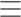

<!doctype html>
<html lang="en">
<head>
    <meta charset="utf-8">
    <title>Mobile Both-Match</title>
    <base href="/">
    <!--  <meta name="viewport" content="width=device-width, initial-scale=1">-->
    <meta name="viewport" content="width=device-width, initial-scale=1.0, minimum-scale=1.0, user-scalable=0">
    <link rel="icon" type="image/x-icon" href="favicon.ico">
    <link href="https://fonts.googleapis.com/css2?family=Open+Sans:wght@300;400;500;600;700;800&display=swap" rel="stylesheet">
    <link href="https://fonts.googleapis.com/css2?family=Encode+Sans:wght@100;200;300;400;500;600;700;800&display=swap" rel="stylesheet">
    <link href="https://fonts.googleapis.com/css2?family=Raleway:wght@300;400;500;600;700&display=swap" rel="stylesheet">
    <link rel="stylesheet" href="assets/fonts/stylesheet.css"/>
    <link rel="stylesheet" href="assets/slick.min.css"/>
    <link rel="stylesheet" href="assets/slick-theme.min.css"/>
    <link rel="stylesheet" href="assets/all.min.css"/>
    <script src="assets/jquery-3.6.0.min.js"></script>
    <script src="assets/slick.min.js"></script>
    <script>
	    $(window).on('popstate', function(event) {
		    // $('body').removeClass('sidebar-open');
            // $('aside').addClass('ng-sidebar--closed').removeClass('ng-sidebar--opened');
            // $('.toggle-cross').empty();
            // $('.toggle-drawer').append('');
	    });
    </script>
</head>
<body>
<app-root></app-root>
</body>
</html>
